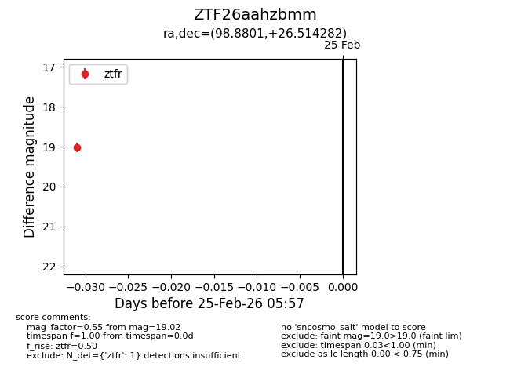
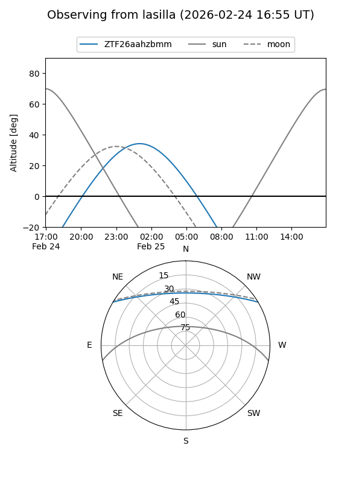
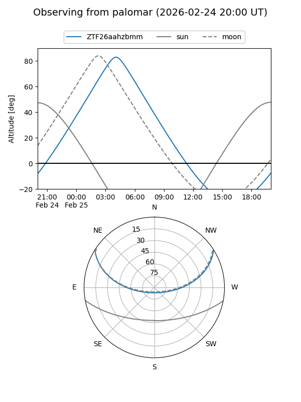

ZTF26aahzbmm
Target ZTF26aahzbmm at 2026-02-25 05:58
Aliases and brokers:
FINK: link
Lasair: link
ALeRCE: link
alt names
ZTF26aahzbmm (ztf,fink_ztf)
Coordinates:
equatorial (ra, dec) = 98.8801,+26.51428
equatorial (HMS+DMS) = 06:35:31.22,+26:30:51.41
galactic (l, b) = (187.4400,+8.52806)
Flags:
Photometry:
last ztfr=19.02
1 ztfr detections
Lightcurve

Visibility


Additional plots